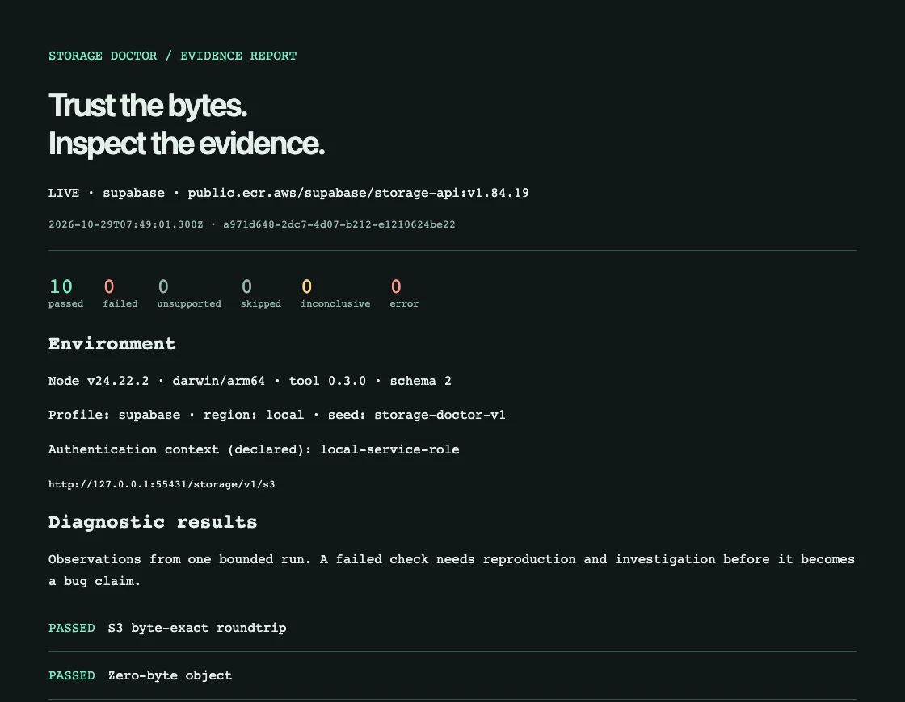
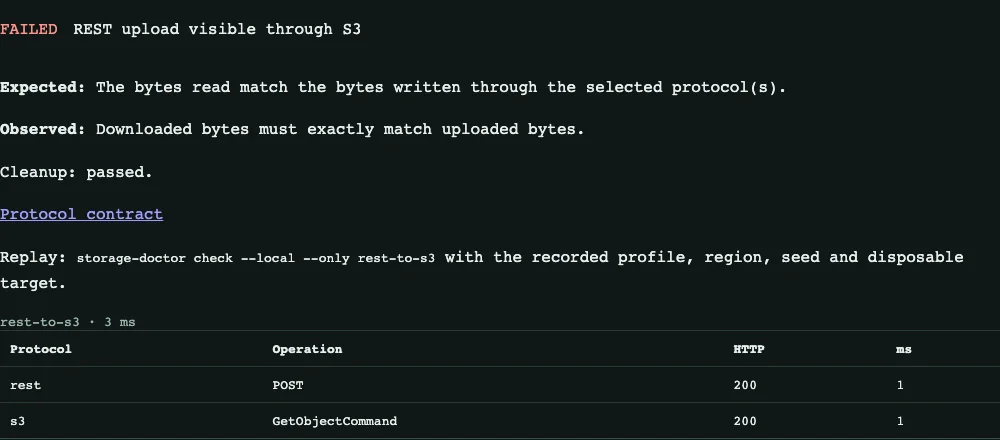

HTTP 200 is not proof the bytes are right.
An upload can succeed through one interface while a read through another returns different bytes. Storage Doctor runs ten fixed checks across Supabase REST, S3 and TUS on a disposable target, compares a run against a healthy baseline, and exports a focused, checksummed reproduction another engineer can verify.

Why it exists
Storage bugs hide between interfaces.
A file uploaded over REST looks fine in the API response, but reading it through S3 returns other bytes, or an overwrite is visible in one interface and not the other. A green status code hides it, and nobody can hand over a reproduction.
Each check records expected versus observed bytes and state. Comparisons only run between compatible runs, missing evidence can never turn green, and exports carry traces, seed and a recipe that verify against their checksums before sharing.
Try it · runs in your browser
Watch a regression get caught
A genuine 45-second recording: a healthy fixture run, the same run with injected corruption (it exits 1, as intended), the comparison, the export and its verification. Then open the real reports below.
The corruption is injected into a local protocol fixture on purpose; it is not a Supabase defect. The local Supabase report comes from a separate run against a disposable instance.
How it works
Run, compare, investigate
Ten bounded checks
Byte integrity and state visibility across REST, S3 and TUS: uploads, overwrites, deletes and cross-interface reads, against loopback targets only.
Comparison you can trust
Bundles are checksum-verified before a PASS→FAIL is classified; incompatible runs or missing assurance are refused, not shown as green.
Reproduction bundles
Export one failing scenario with expected and observed behaviour, traces, seed and a recipe; verify checks the bundle before you share it.
CLI and GitHub Action
Released as v0.3.0 with package, evidence ZIP and checksums; CI covers Node 22 and 24 plus a real disposable Supabase run.
The flow, step by step
Screens
What it looks like
Screenshot of the injected-corruption report.

Evidence
What is real, and what is not
REAL Built and verified
- Released CLI and GitHub Action with exact-commit validation evidence
- A real run against a disposable local Supabase instance and in CI
- The reports and recording on this page are actual outputs
SIMULATED Mocked or not built yet
- The regression shown is injected into a local fixture, not a vendor defect
- Ten passing checks describe one run, not general compatibility
- No independent human usability or security review yet; v0.3.0 is in maintenance mode
Run it yourself
Run it locally
Node 22 or 24. The demo needs no Docker or storage account.
git clone --branch v0.3.0 https://github.com/phlppgdfry/storage-doctor.git
cd storage-doctor
npm ci
node src/cli.js demo # credential-free fixture, opens report.html
# see a regression (the 2nd and 3rd commands exit 1 on purpose)
node src/cli.js demo --out reports/good
node src/cli.js demo --inject-corruption --out reports/bad
node src/cli.js compare --baseline reports/good/report.json --report reports/bad/report.json